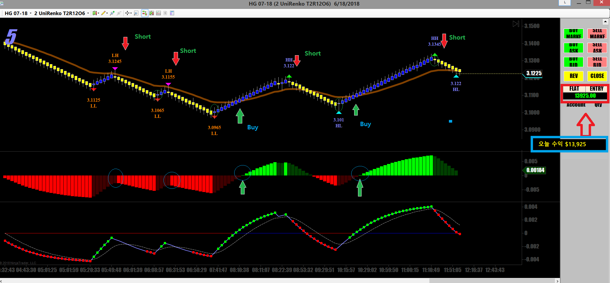

[매매일지] 구리선물 매매
글쓴이 : fjejetg 날짜 : 2018-06-19 (화) 04:12 조회 : 923 신고

해외선물매매 23년차입니다
구리선물을 스캘핑하고 있습니다
혹시 해외선물 매매하시는 분 계시면 구경하시라고..
None of my business !!
fjejetg님이 작성하신 다른 글
[2018-06-20] 오늘 구리선물 매매 요약 (14)
오토케 2018-06-19 (화) 09:46
수익 축하드립니다. 부럽네요.
저는 3년차이고 캔들차트에 거래량 이동평균선 위주로 차트를 분석하고 있습니다.
렌코차트를 보시네요. 수익이 꾸준히 나시는지 궁금합니다.
글쓴이 2018-06-19 (화) 09:55
감사합니다
오늘은 구리가 크게 움직인날이라 물량실어 매매해서 수익이 좀 난거지만
보통 컨디션에선 저렇게 많이 나지 않습니다
간만에 크게 수익나서 함 올려봤슴다..ㅋ
선물매매를 오래해서 손실보는날은 드물고 수익이 많고 적고 차이가 많이 납니다
제 맘대로 수익이 나는게 아니라 장세에 달려있는게 스캘핑이다보니
수익은 제힘으로 조절이 잘 안됩니다
챠트는 렌코를 변형한 유니렌코입니다
Whipsaw를 제거하고 챠트를 만들기 때문에 매매하기 편하고 헛손질을 줄여줘서 좋습니다
시공속으로 2018-06-19 (화) 15:52
차트 간결하고 깔끔해서 판단하기 좋겠네요.
제 차트는 약간 복잡해서 뺄건 빼야 되는데 빼기가 쉽지 않네요.
글쓴이 2018-06-19 (화) 16:30
오랜세월 수많은 시행착오와 실패를 바탕으로 나름대로 만든 챠트입니다
이름이 단순무식 챠트라고..ㅎ
색깔 바뀔때 매매하는 단순무식 챠트입니다.
시공속으로 2018-06-19 (화) 16:43
단순무식한게 좋죠.^^
저도 그렇게 만들어볼려고 하는데 시행착오를 몇번 더 겪어야 되겠죠.ㅎㅎ
pochin 2018-06-19 (화) 19:30
구리같은 상품들은 어떻게 매매를 하나요?
키움같은 일반 증권회사의 HTS를 이용하나요?
아니면 별도의 방법이 있는것인지 궁금합니다. 상품거래에 관심이 많아 여쭈어 봅니다.
글쓴이 2018-06-19 (화) 19:47
저는 미국 현지에서 매매를 하기 때문에 한국씨스템을 잘 모릅니다
구리선물도 결국 증권사에 구좌오픈하시고 거기서 제공하는 HTS에서
크루드오일이나 금같이 그냥 매매하시면 됩니다
다만 각기 선물마다 매매할 때 알아야 할 사항들이 있습니다
언제 움직이는지 움직이게 만드는 재료가 뭔지 등등
온라인으로 잘 찾아보시고 연습하시면서 승률이 충분히 높을때 적은양으로 시작해보시면 됩니다
pochin 2018-06-19 (화) 22:21
아 미국에서 하시는 군요... 답변 고맙습니다.
크루드a 2018-06-19 (화) 21:42
멋지십니다.. 해외선물 너무 어려워서 힘도 못쓰고 있는데 ㅠㅠ
기회된다면 조언좀 얻어보고싶습니다 ㅠㅠ
글쓴이 2018-06-20 (수) 00:28
별로 잘하진 못하지만 언제라도 궁금한거 있으시면 말씀하세요
제가 아는 한도내에서는 같이 의견 나눠보지요